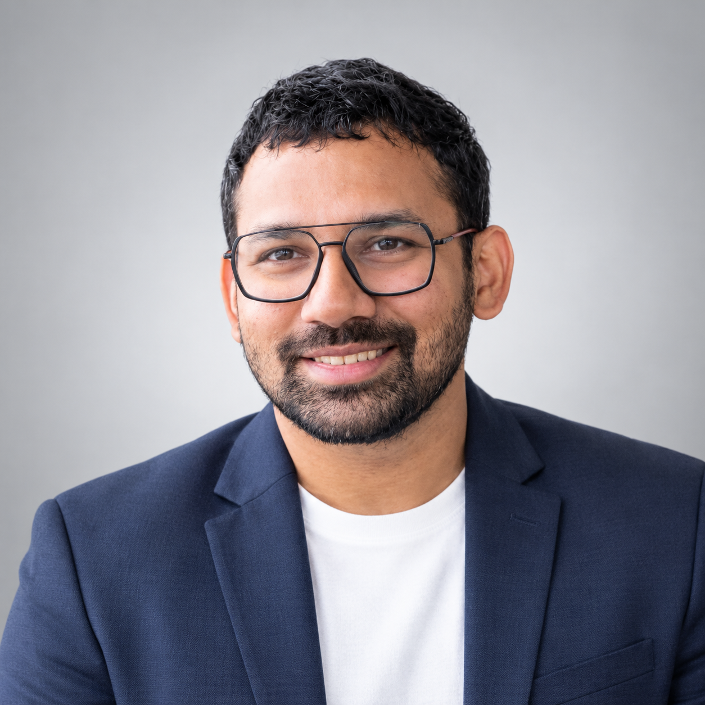

Reconstructive surgery
Reconstruction and complex tissue repair, including trauma and complex wound reconstruction.
Plastic · Reconstructive · Aesthetic
Dr. Derick Jose, MBBS, DrNB Plastic & Reconstructive Surgery. A clinical and research background spanning reconstructive surgery, burns, trauma, hand surgery, craniofacial reconstruction and wound care.

About Dr. Jose
Dr. Derick Jose completed the Direct 6-Year DrNB training programme in Plastic & Reconstructive Surgery at Apollo Health City, Hyderabad, with training completed in August 2026.
His clinical training encompasses aesthetic and reconstructive surgery, burns, trauma, hand surgery, craniofacial reconstruction and advanced wound care. His academic interests include rhinoplasty, nasal reconstruction, nasal tip support and facial aesthetics.
His DrNB thesis was accepted by the National Board of Examinations in Medical Sciences (NBEMS) and received a Certificate of Commendation for outstanding research contribution.
Clinical training & interests
Clinical areas included in Dr. Jose’s training and academic interests. Individual treatment suitability requires a professional consultation.
Reconstruction and complex tissue repair, including trauma and complex wound reconstruction.
Research interest in nasal support, caudal nasal reconstruction, nasal tip stability and facial aesthetics.
Clinical training across burns, hand surgery, craniofacial reconstruction and advanced wound care.
Education & experience
A concise overview of the education and clinical roles listed in the professional CV.
Apollo Health City, Hyderabad · Direct 6-year programme. Training completed 16 August 2026.
Jubilee Mission Medical College, Thrissur, Kerala.
Jubilee Mission Medical College, Thrissur, Kerala.
PK Das Institute of Medical Sciences, Ottapalam, Kerala.
Research & academic work
Research and scientific presentations in plastic and reconstructive surgery.
DrNB thesis · NBEMS commendation
The thesis was accepted by NBEMS on 20 June 2025. A Certificate of Commendation was awarded for outstanding research contribution.
Jose D, Pigilam S, et al. “Multidisciplinary Intervention for Labial Fusion in a Case of Vulval Lichen Planus.” PARIPEX – Indian Journal of Research, August 2022.
Scientific speaker at AESURG 2026; e-poster presentation at Aesthetics 2025; poster-category participation at NABI Mid-Term CPD 2023.
“Nasal Tip Stability and Aesthetics: A Prospective Study Comparing the Columellar Strut and Septal Extension Graft in Caudal Nasal Reconstruction.” Submitted to APS Journal; editorial response awaited as listed in the CV.
Beyond the operating theatre
Participant in the 2nd Craniofacial Course: Distraction Osteogenesis, NIMS, Hyderabad (2024).
Workshop participant in Non-Surgical Aesthetic Practice (2025) and delegate at Global Aesthetics Summit 2026.
English, Malayalam, Telugu and Hindi.
Contact
For professional enquiries, collaborations or further information, use the contact details below.
Send an email ↗